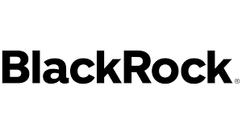

Investment Approach
The Gorski Family Office is committed to disciplined, long-term investment strategies across a range of asset classes. Alongside our core focus in institutional private equity, we emphasize hedge funds, derivatives, and structured investments as key drivers of portfolio growth and risk management. We invest in premier global managers in private equity, alternative investments, hedge funds, and structured products, including:
- 

Our diversified portfolio and expert stewardship ensure we can support both family legacy and philanthropic goals, leveraging a blend of private equity, hedge funds, derivatives, and structured investments.
Alternative Investments
We utilize institutional-grade vehicles and structured investments, including derivative products, for risk management and value creation. Our approach blends traditional and alternative strategies, providing a resilient platform for sustainable growth and impact.